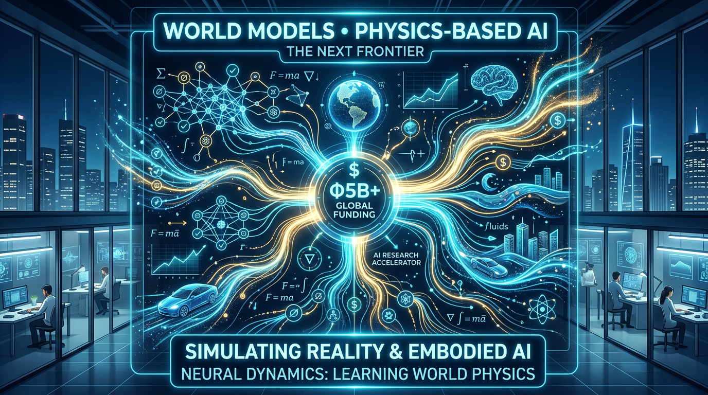
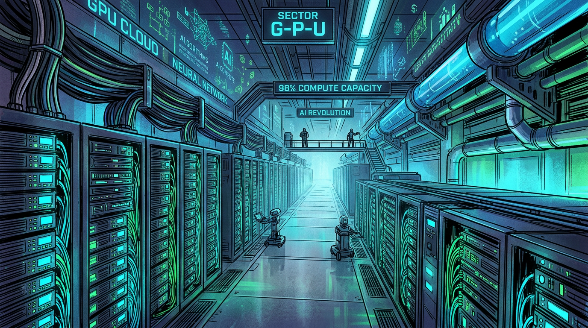

Tech & Trends


Tech & Trends
2 Milliarden für Rechenpower: Nscale und das GPU-Goldrausch-Geschäft
Während alle über KI-Modelle reden, verdient Nscale am Grundstoff: GPU-Cloud-Infrastruktur. 2 Milliarden Dollar Series C...

Tech & Trends
Anthropics App-Store-Moment: Der Claude Marketplace will deine IT-Abteilung abschaffen
Anthropic startet den Claude Marketplace – und nimmt dafür keinen einzigen Cent Provision. GitLab, Snowflake, Harvey und...
Tech & Trends
Microsoft + Anthropic: Wenn der Feind meines Feindes mein Freund wird
Microsoft setzt bei Copilot Cowork nicht auf OpenAI, sondern auf Anthropic's Claude. Ein Bündnis der beiden OpenAI-Jäger...

Tech & Trends
Metas Avocado ist faul: Warum Zuckerbergs KI-Strategie scheitert
Mark Zuckerberg wollte mit Llama die Open-Source-Revolution anführen. Stattdessen führt er eine Parade der Verzögerungen...